先日掲載の情報の通り、２０２３年１１月２３日にアニメイトにて新たなミルモグッズが発売されました。
発売開始から１日遅れですが、ミルモグッズを求めて池袋にあるアニメイト本店を訪れましたのでレポートいたします。
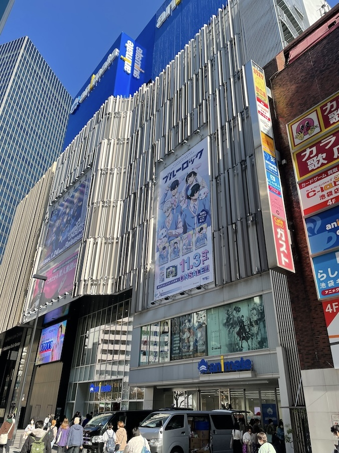
池袋のアニメイト本店です。
さすが世界最大級と言われるだけあって、めちゃくちゃ大きくて東京の新名所とも言えそうです。
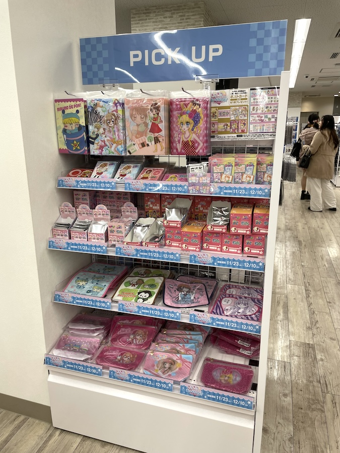
我らがミルモグッズたちは４階のグッズ販売コーナーにありました。
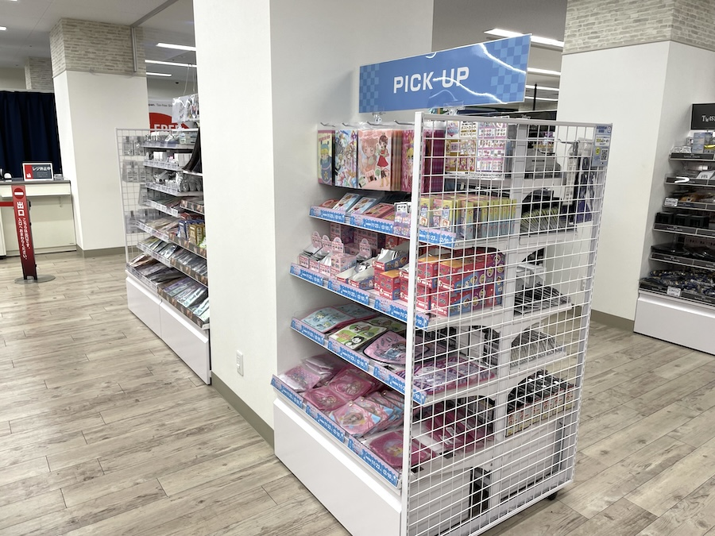
このフロア、他にも多くのアニメ作品のグッズが売られているので、ミルモグッズたちを見つけるのは結構苦労するかも(^◇^;)
フロアの中央あたりにあるので根気よく探してみましょう。
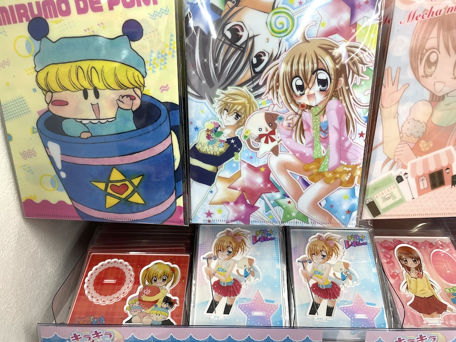
やはりお店にミルモがいると「おぉ〜」と言いたくなりますね。
この後「懐かしい〜」という声も聞きましたが、残念ながら「きらレボ」に対してでした。
この中ではミルモがもっとも古株ですね。
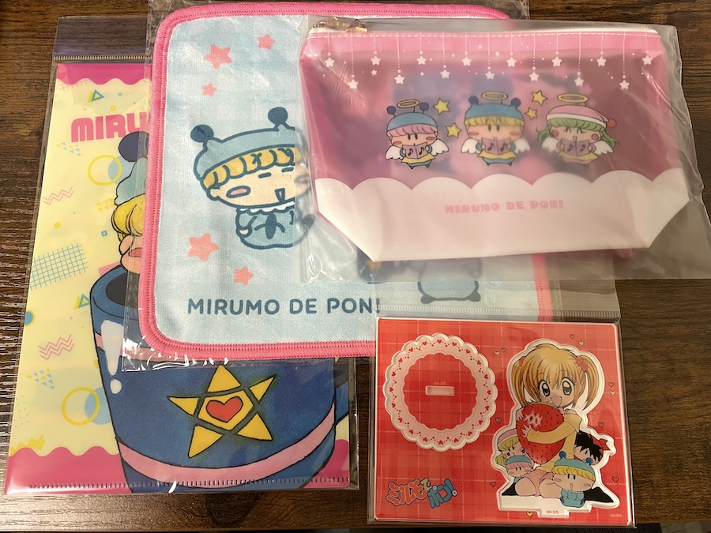
帰宅して、購入したグッズ鑑賞会になります。
今回購入したのはこの４点。
（ガチャ要素のある商品は資金不足のため購入せず。。）
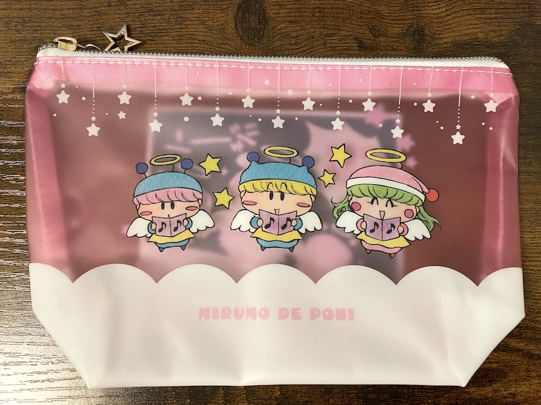
まずは今回のグッズの中でも最も気になる存在とも言えるポーチです。
聖歌隊姿の３人がかわいい〜(^^)
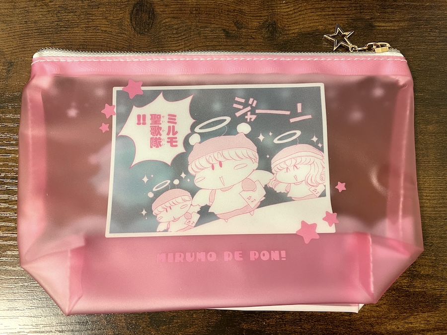
裏面にも聖歌隊の姿が！
ジャーン！！
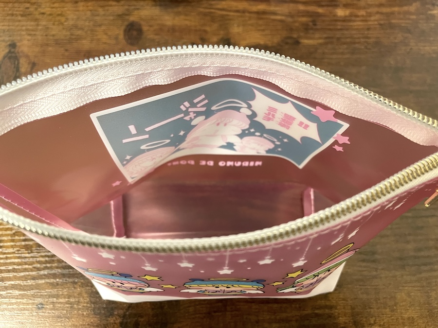
このポーチ、底が結構広がるのでいろんな小物を収納できそうです。
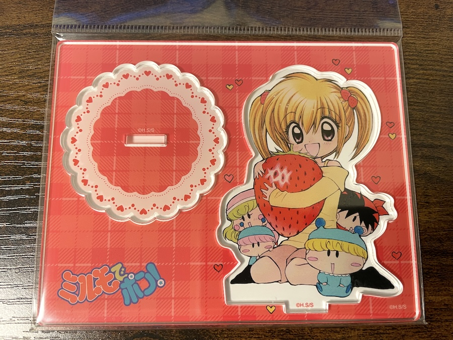
続いてアクリルスタンドです。
色鮮やかで机の上に置くと映えそうです。
ヤシチは今回はこのアクリルスタンドのみ参加ですね(^◇^;)
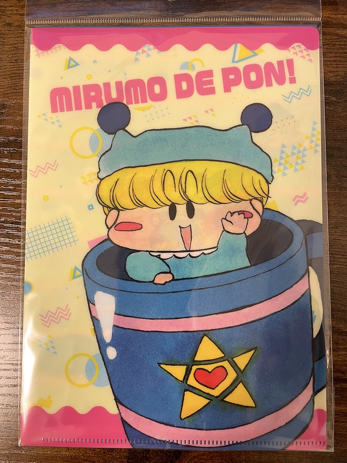
クリアファイル２枚セットのうちの１枚目です。
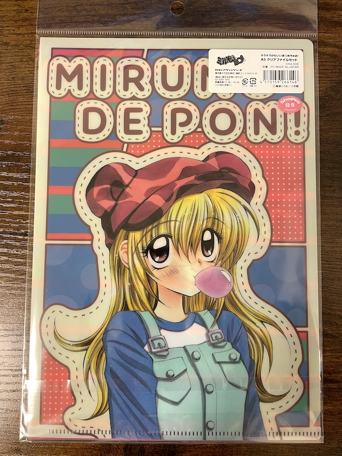
２枚目のクリアファイルです。
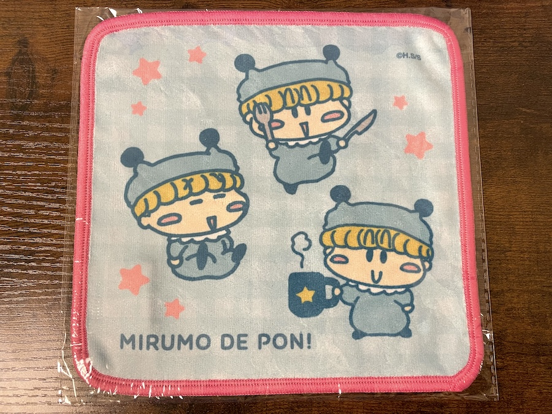
ミニタオルです。
右下のマグカップを持ってるミルモの絵柄って今まで見たことがあったかな・・？
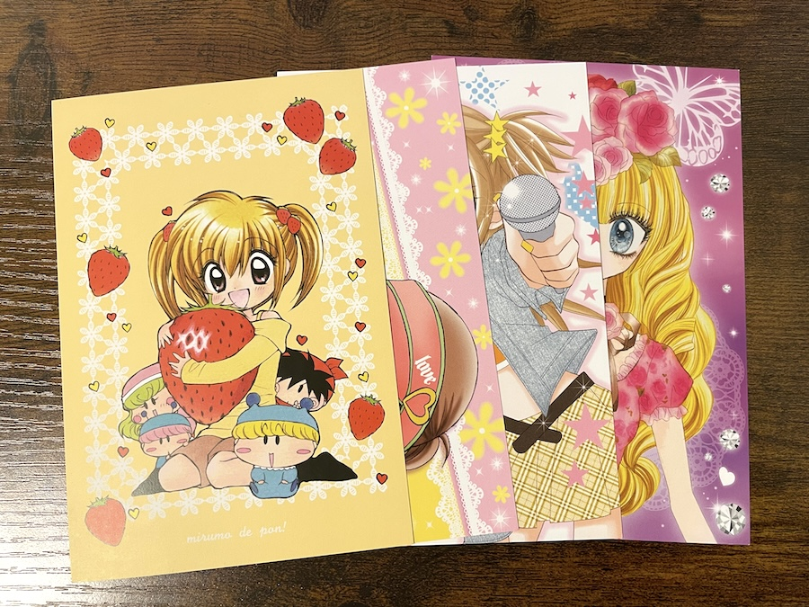
購入金額1,100円ごとに１枚もらえるポストカードです。
各作品２種類ずつあり、ミルモについてはもう１つは聖歌隊のイラストのようです。
・・・もったいなくて使えない！！
店頭にはまだまだ在庫はたくさんあるようですが、販売期間は短め（１２月１０日まで）なのでお早めに！！
(2023/11/24)